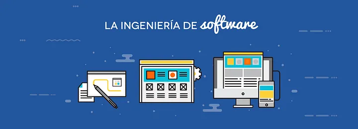

Si tienes dudas todavía acerca de la ingeniería de software, aqui podras encontrar información útil e importante que te servirá para decidir sobre tu futuro profesional y si la ingeniería de software es para ti. Te invitamos navegar en el sitio web y resolver todas tus dudas.